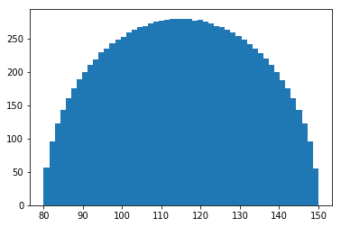

[1]:
from emat import Scope
[2]:
import emat
import numpy as np
from pytest import approx
[3]:
from matplotlib import pyplot as plt
[4]:
import seaborn as sns
/Users/jpn/anaconda/envs/EMAT/lib/python3.6/importlib/_bootstrap.py:219: ImportWarning: can't resolve package from __spec__ or __package__, falling back on __name__ and __path__
return f(*args, **kwds)
[58]:
scope_file = emat.package_file("model", "tests", "road_test_nonuniform.yaml")
scp = Scope(scope_file)
exp_def = scp.design_experiments(
n_samples_per_factor=1000,
random_seed=1234,
sampler='lhs',
)
assert len(exp_def) == scp.n_sample_factors() * 1000
assert (exp_def['free_flow_time'] == 60).all()
assert (exp_def['initial_capacity'] == 100).all()
assert np.corrcoef([exp_def.alpha, exp_def.beta])[0, 1] == approx(0.75, rel=0.05)
assert np.corrcoef([exp_def.alpha, exp_def.expand_capacity])[0, 1] == approx(0.0, abs=0.02)
assert np.corrcoef([exp_def.input_flow, exp_def.value_of_time])[0, 1] == approx(-0.5, rel=0.05)
assert np.corrcoef([exp_def.unit_cost_expansion, exp_def.value_of_time])[0, 1] == approx(0.9, rel=0.05)
assert exp_def.interest_rate_lock.sum() == approx(len(exp_def) * 0.2)
assert np.percentile(exp_def.alpha,np.linspace(0,100,50)) == approx(
[0.10037393, 0.10722119, 0.10994485, 0.11204394, 0.11383709,
0.11544182, 0.11691345, 0.11829399, 0.11959909, 0.12084863,
0.12205279, 0.123218 , 0.12435285, 0.12546474, 0.12655958,
0.12763503, 0.12869873, 0.12975137, 0.1307962 , 0.13183375,
0.13287082, 0.13390854, 0.13494651, 0.13598528, 0.13703149,
0.1380818 , 0.13914411, 0.14021784, 0.14130323, 0.14240609,
0.14352608, 0.14466756, 0.14583411, 0.14702908, 0.1482572 ,
0.14951875, 0.15082844, 0.15218376, 0.15359963, 0.1550812 ,
0.15664534, 0.15831425, 0.16010073, 0.16203921, 0.16418886,
0.16662357, 0.16946999, 0.17301416, 0.17804383, 0.19662857])
assert np.percentile(exp_def.beta,np.linspace(0,100,50)) == approx(
[3.51654751, 3.72503059, 3.82437701, 3.90088124, 3.96222432,
4.01360346, 4.06112277, 4.10640347, 4.14456476, 4.18084719,
4.21812584, 4.24926944, 4.28049053, 4.31181127, 4.34390502,
4.3756159 , 4.40541815, 4.43276143, 4.45517485, 4.4806229 ,
4.50726296, 4.53334164, 4.55737738, 4.57893875, 4.60371011,
4.62590595, 4.64885523, 4.67335218, 4.69475909, 4.71546469,
4.73676622, 4.7579655 , 4.77690613, 4.79738177, 4.81947505,
4.84481408, 4.86954326, 4.89379651, 4.91771359, 4.94100213,
4.9716937 , 5.00298714, 5.03525103, 5.07100437, 5.11028866,
5.15061419, 5.19925284, 5.24775527, 5.32086547, 5.4934512 ])
assert np.percentile(exp_def.input_flow,np.linspace(0,100,50)) == approx(
[ 80.06332381, 83.71770678, 85.93721426, 87.82355332,
89.52967083, 91.11148891, 92.60789787, 94.03509345,
95.41186604, 96.74598771, 98.04479355, 99.31122788,
100.55462827, 101.77808514, 102.98041937, 104.16517008,
105.33959643, 106.50165383, 107.653666 , 108.79827639,
109.93328795, 111.06707367, 112.19316408, 113.31493454,
114.43982739, 115.56182157, 116.68454749, 117.80620837,
118.93524815, 120.06752762, 121.20470208, 122.34781469,
123.50083542, 124.66086016, 125.83390291, 127.02146142,
128.22485477, 129.44681602, 130.68613841, 131.95601658,
133.25403807, 134.58951122, 135.96442305, 137.39295642,
138.89092217, 140.47204147, 142.17835057, 144.06540067,
146.28064479, 149.94588322])
[56]:
np.percentile(exp_def.input_flow,np.linspace(0,100,50))
[56]:
array([ 80.06332381, 83.71770678, 85.93721426, 87.82355332,
89.52967083, 91.11148891, 92.60789787, 94.03509345,
95.41186604, 96.74598771, 98.04479355, 99.31122788,
100.55462827, 101.77808514, 102.98041937, 104.16517008,
105.33959643, 106.50165383, 107.653666 , 108.79827639,
109.93328795, 111.06707367, 112.19316408, 113.31493454,
114.43982739, 115.56182157, 116.68454749, 117.80620837,
118.93524815, 120.06752762, 121.20470208, 122.34781469,
123.50083542, 124.66086016, 125.83390291, 127.02146142,
128.22485477, 129.44681602, 130.68613841, 131.95601658,
133.25403807, 134.58951122, 135.96442305, 137.39295642,
138.89092217, 140.47204147, 142.17835057, 144.06540067,
146.28064479, 149.94588322])
[44]:
plt.hist(exp_def.alpha, bins=50);

[42]:
plt.hist(exp_def.beta, bins=50);

[43]:
plt.hist(exp_def.input_flow, bins=50);

[ ]: